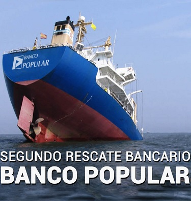

El banco popular es un banco español fundado en 1926 que ha llegado a ser el quinto banco más importante del país.
Desde finales de los noventa comenzó su ascensión meteórica integrándose en todas las comunidades autónomas españolas. Llego a tener presencia también en Portugal y en Sudamérica. Sin embargo cometió varios errores muy graves que han acabado pagando los de siempre, los inversores y clientes del banco. El que fraguó este desastre mientras estuvo vivo fue Luis Valls que hipoteco al banco entrando en el negocio inmobiliario concediendo créditos millonarios sin calcular el riesgo de estas operaciones. Y es que entro comprando ya al final de la crisis las hipotecas que otros bancos vendían, sabiendo lo que estaba por venir.
Sin embargo, tras la crisis inmobiliaria en España otros muchos bancos decidieron deshacerse de los activos enviándolos al banco malo, la SAREB, asumiendo perdidas. Y es que, es mejor asumir perdidas pronto, que perderlo todo.
Tras la muerte de Valls le sucedió Angel Ron, y es que ya lo dice el dicho,otro vendrá que bueno me hará.
El banco pues sera controlado por Ron desde el 2006, el cual sera todo un despropósito de gestión en la cual se dedicará a endeudar todavía más al banco comprando corporaciones quebradas o haciéndose con otros bancos como el banco Pastor, el cual fue absorvido al 100% en 2011. Estas adquisiciones si hubieran sido acomodadas al banco con tiempo y se hubiera invertido inteligentemente podría haber revertido los daños de la crisis. Por poner un ejemplo, 2009 fue la época perfecta para empezar a acumular acciones de empresas que habían sufrido una enorme erosión por la crisis de Lehman Brothers y comprar materias primas como oro o plata. Pues bien, el banco estaba todavía invirtiendo en ladrillo.
Tras el pinchazo final de la burbuja a finales de 2009 y entrados en la crisis real en España con una destrucción de empleo diaria el banco se negaría a vender sus activos tóxicos como hipotecas y ladrillo. En 2012, año en la que España rozaba el record de desempleo, el banco acumulaba ya unas perdidas difícil de recuperar. Sin embargo se tapo todos esos datos y se continuo como si nada pasará, a ver si arreciaban vientos mejores y los activos se revalorizaban. Y es que en economía no se puede esperar y arriesgarlo todo y esa es básicamente la gestión de Angel Ron, el inmovilismo.

La capitalización de la empresa paso de 8700 millones en 2014 a 5000 millones en 2015. Y aun tendría que bajar mucho más, hasta los 1300 millones que cerro con unas cuentas que delataban una deuda descomunal, es decir una capitalización real negativa. Si atendemos a la gráfica que el precio de la acción ha disminuido desde los 5 euros, en 2014, a los 0.5 euros cuando quebró. Es decir, un 90% y la capitalización una cifra algo menor desde los 5000 millones a apenas 1300 millones. Sin embargo la capitalización real si que ha caído y mucho más porque año tras año el inversor de Popular debía suscribir acciones para no perder lo poco que tenía. Esa inversión digamos para salvar al banco era cobrado por los directivos y los empleados hasta el año siguiente cuando se realizaba otra nueva ampliación.

Este banco a parte de récord en dinero evaporado también tiene otro record, ser el banco con mayores ampliaciones de capital.
Y es que desde que empezaron a soplar malos vientos en 2008 el banco ha realizado la nada pequeña cifra de 47 ampliaciones de capital. Y es que aunque en el gráfico anterior solo haya signos de una ampliación, es porque esa es la que desbarajusta más el gráfico técnico difícil de seguir si se sostiene solo el precio de la acción. Esto se debe a que ese año se realizo un contrasplit de 5 a 1 para disminuir el número de acciones y darle más valor.
Sólo cabe decir que para haber salvado a Popular de la quiebra habría que haber realizado otra ampliación por valor de 3000 millones, 3 veces casi el valor que tiene en bolsa, es decir una dilución del 66%. Este robo no sólo ha sido posible por una persona.
Aquí han jugado un gran papel otras figuras pero siempre se marcan a los presidentes o dirigentes de las empresas, si bien ellos son los que ponen o quitan a la gente, luego son los máximos responsables.
Sin embargo parece mentira que la CNMV haya permitido estos descalabros. Cualquier regulador bursátil de un país del primer mundo habría puesto a este banco fuera del IBEX35. Pero en España la corrupción esta en todos los entes y donde no iba a faltar es en el sitio donde se encuentra la mayor riqueza del país.
Dice el dicho que las ratas son las primeras en abandonar el barco, así pues Angel Ron dejo la presidencia de Popular en el año 2016, y el encaminado a sucederle era Saracho, un experto en banca de negocios y valoración de activos financieros. Si bien no sabía los entresijos de la banca comercial. El señor Emilio Saracho estaba puesto por algún dedo de arriba para poder encauzar la absorción de este por el Banco Santander a un precio asequible para el último. Con esto el Santander se habría hecho un gran espacio en España y seguro que se habría retribuido a los responsables como Saracho, consejeros y asesores por estas acciones. En la imagen inferior, Angel Ron y Emilio Saracho, últimos y máximos responsables del Banco Popular.
A finales Abril el banco empieza a sufrir la presión constante de los bajistas en la que la CNMV no actualiza correctamente y aun no se sabe si a propósito o por descuido las posiciones cortas sobre la banca.
En ellas se sufre un pulso enorme entre las entidades que se quieren comer al banco y los fondos buitres, en los que el pequeño minoritario que aun seguía decide abandonar. Pero aun habrá un timo mayor porque en declaraciones a periódicos el máximo responsable del banco mintió sobre la situación financiera incitando a la compra de acciones. En los últimos momentos de la cotización ya acabado el viernes se reunirían máximos mandatarios de los dos bancos junto con personas del gobierno y se haría real la adquisición del banco por un euro. Para ello sería enviada la petición a la unión europea y sería admitida.
Sin embargo la operación estrella del Banco Santander ha salido más negativa que positiva ya que muchos de los cliente del antiguo banco decidieron irse a otros bancos y debido a la supuesta implicación del Banco Santander en la devaluación última del Popular, el Santander ha perdido bastante reputación dentro del sector financiero, más que lo que pudiera sacar a largo plazo con el citado banco.
Todo apunta a que el banco Santander ya en Marzo no estaría interesado a llevarse el banco Popular a cualquier precio y al final se lo llevaría quizás por presiones internas del gobierno central. Para evitar una posible quiebra del mismo en bolsa y el aprovechamiento del capital por brokers extranjeros.
Y es que a veces a pesar de presumir de liberales cuando perdemos somos capaces de ser más intervencionistas que Venezuela.
Todas estas ilegalidades y irresponsabilidades aun siguen investigadas y las personas han pasado ya algunas veces por juzgado si bien las víctimas de esta estafa aún no han recibido el dinero invertido que perdieron. A día de hoy todos los bienes del banco están en manos del Banco Santader, entidad presidida por Ana Botín, imagen de la derecha.
© 2016 - All Rights Reserved - Diseñada por Sergio López Martínez
![[Valid RSS]](https://www.feedvalidator.org/images/valid-rss-rogers.png "Validate my RSS feed")